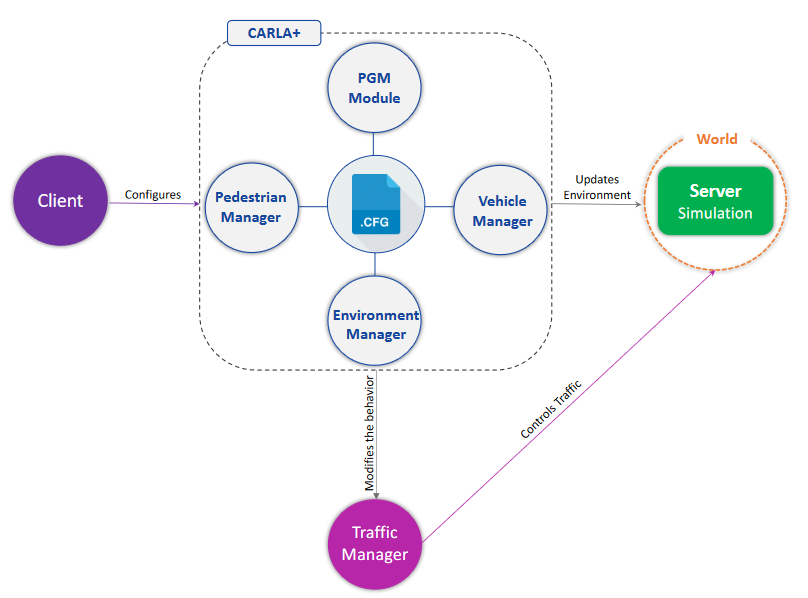
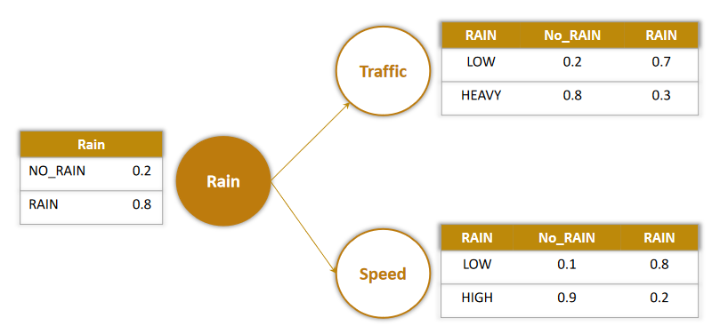
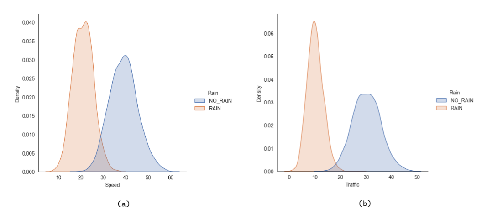
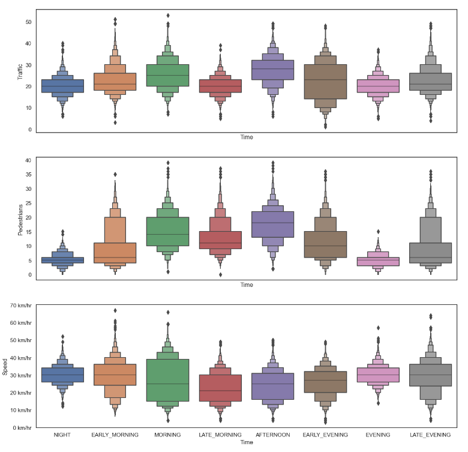

![]()
Important links
Abstract
In an urban and uncontrolled environment, the presence of mixed traffic of autonomous vehicles, classical vehicles, vulnerable road users, e.g., pedestrians, and unprecedented dynamic events makes it challenging for the classical autonomous vehicle to navigate the traffic safely. Therefore, the realization of collaborative autonomous driving has the potential to improve road safety and traffic efficiency. However, an obvious challenge in this regard is how to define, model, and simulate the environment that captures the dynamics of a complex and urban environment. Therefore, in this research, we first define the dynamics of the envisioned environment, where we capture the dynamics relevant to the complex urban environment, specifically, highlighting the challenges that are unaddressed and are within the scope of collaborative autonomous driving. To this end, we model the dynamic urban environment leveraging a probabilistic graphical model (PGM). To develop the proposed solution, a realistic simulation environment is required. There are a number of simulators—CARLA (Car Learning to Act), one of the prominent ones, provides rich features and environment; however, it still fails on a few fronts, for example, it cannot fully capture the complexity of an urban environment. Moreover, the classical CARLA mainly relies on manual code and multiple conditional statements, and it provides no pre-defined way to do things automatically based on the dynamic simulation environment. Hence, there is an urgent need to extend the off-the-shelf CARLA with more sophisticated settings that can model the required dynamics. In this regard, we comprehensively design, develop, and implement an extension of a classical CARLA referred to as CARLA+ for the complex environment by integrating the PGM framework. It provides a unified framework to automate the behavior of different actors leveraging PGMs. Instead of manually catering to each condition, CARLA+ enables the user to automate the modeling of different dynamics of the environment. Therefore, to validate the proposed CARLA+, experiments with different settings are designed and conducted. The experimental results demonstrate that CARLA+ is flexible enough to allow users to model various scenarios, ranging from simple controlled models to complex models learned directly from real-world data. In the future, we plan to extend CARLA+ by allowing for more configurable parameters and more flexibility on the type of probabilistic networks and models one can choose. The open-source code of CARLA+ is made publicly available for researchers.
Important figures




Citation
@article{malikCARLAEvolutionCARLA2023,
title = {{{CARLA}}+: {{An Evolution}} of the {{CARLA Simulator}} for {{Complex Environment Using}} a {{Probabilistic Graphical Model}}},
shorttitle = {{{CARLA}}+},
author = {Malik, Sumbal and Khan, Manzoor Ahmed and Aadam and {El-Sayed}, Hesham and Iqbal, Farkhund and Khan, Jalal and Ullah, Obaid},
year = {2023},
journal = {Drones},
volume = {7},
number = {2},
pages = {111},
publisher = {{Multidisciplinary Digital Publishing Institute}},
issn = {2504-446X},
doi = {10.3390/drones7020111},
}